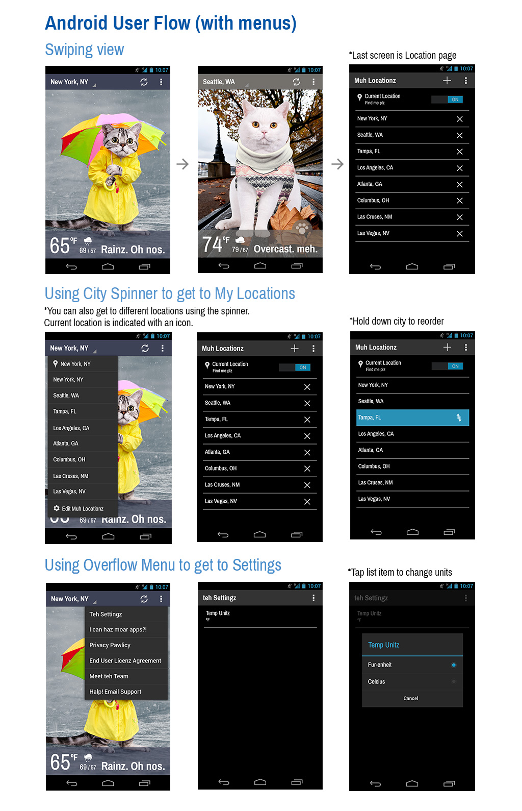

A cat-themed weather app for iPhone & Android
Weather Whiskers holds a 4.5 star rating in the iOS App Store and Google Play Store. I was the lead designer for this project while working at Mindspark – now IAC Applications. I worked on a small team to establish the user experience, interface design, brand identity, and artwork for both of our iOS and Android apps. More at weatherwhiskers.com.
Our goal was to make the experience “so easy, a cat could use it”. Our users would need to be able to add and switch between cities, check the forecast, and share their weather on social media. We also strove to provide accurate weather while delighting the audience with an app seemingly for cats and by cats.
For our research, we tested over a dozen existing weather apps and studied best practice guides for iOS and Android app interfaces. We developed user flows and developed low-res mock-ups in HTML and CSS for User Testing.
As part of our design process we developed a style guide. Even though we had chosen a theme for the app, it was still important to establish a cohesive tone for language and visual design. A hallmark of our project was attention to detail. I developed a set of cat-themed icons for each weather condition. We also decided to use color to provide visual clues about the weather, because cats can’t read. I developed a color and icon guide that was affectionately dubbed "the purriodic table".
Once the app was ready to release into the app stores, we also needed to develop marketing assets that could convey the tone of the app as both playful and credible.
It was important to us to fill the app with high-quality art. Each image was crafted to tell a story, depict emotion, and hopefully amuse the user. In the first version of the app we released a set series of cats, but in later versions we released additional "cat packs" that users could buy. These packs included themes like Meowsterpieces, a set of art-inspired weather scenes.